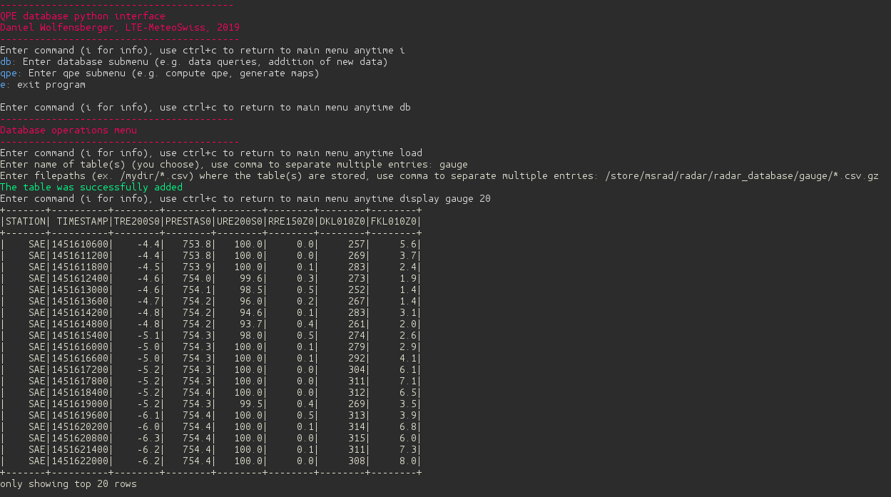
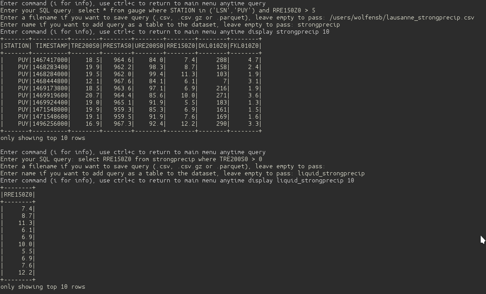
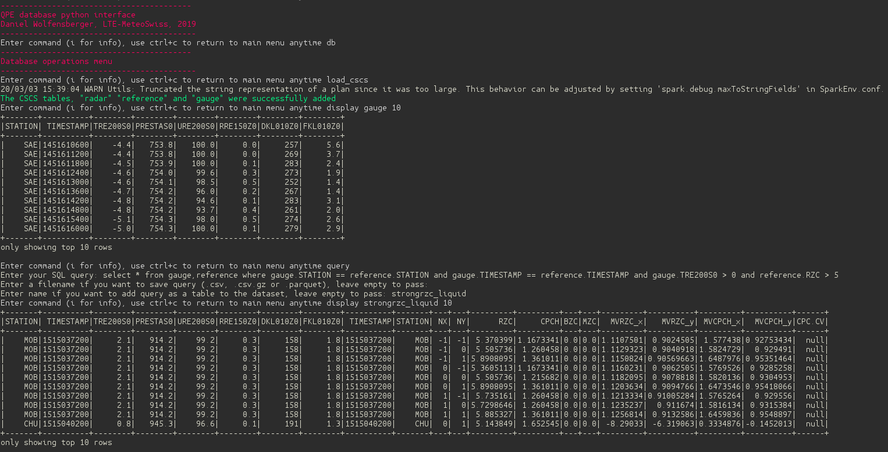
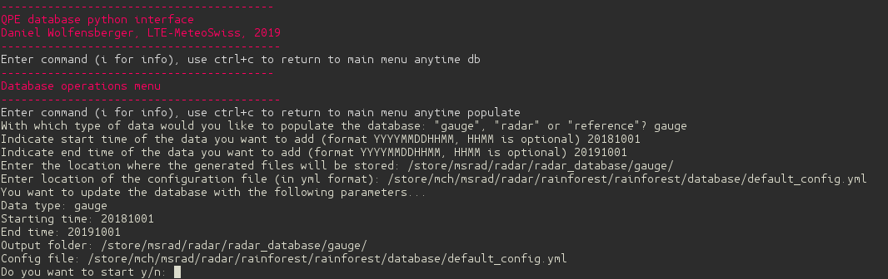

Interface
The library provides a guided command-line interface that can be called by typing rainforest_interface in the console
rainforest_interface
The first example belows shows how to load a table into the database from files.
The second example shows how to perform a SQL query from a the set of gauge data to select only strong precipitation. This query is then saved to a file and to memory, to be reused in a second query which extracts only precipitation measurements for positive temperatures
The third example shows how to load all three table types radar, reference and gauge at once on Kesch and how to do a more complex SQL query from multiple tables. In this case we retrieve the data from the reference and gauge tables, where RZC > 5 and where the temperature is positive.
The last example shows how to populate the database with new gauge data, as an alternative to the command line utility db_populate.
